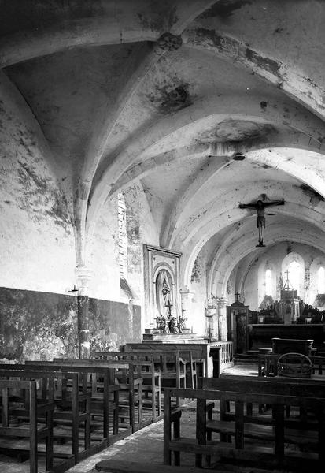
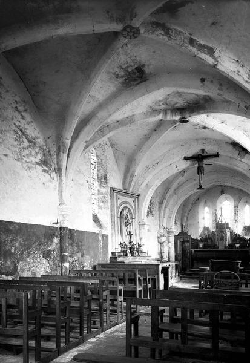

Association "Les amis de Vitotel"
Cette association, type association loi 1901, a pour objectif de :
- Récolter des fonds pour financer des opérations de restauration, de conservation, d’entretien, de valorisation de l’église (bâtiment, mobilier, objet d’art, …) et de son environnement.
- Montrer l’intérêt porté par la population pour la sauvegarde de l’église.
- Mener des animations dans l’église ou ailleurs, à buts culturels, artistiques, éducatifs, historiques, …